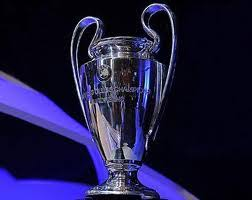

Powrót
Trofea
Męska drużyna piłkarska Barçy zdobyła m.in.: 5x Ligę Mistrzów, 27x LaLigę, 31x Puchar Króla, 3x Klubowe Mistrzostwo Świata, 4x Puchar Zdobywców Pucharów, 5x Superpuchar Europy i 14x Superpuchar Hiszpanii.
